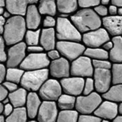

Browser-only preview
Run QS with a real training image
Choose Stone or Strebelle and run an unconditional QS simulation inside a Web Worker. Every run uses a new random seed and produces a result with the same dimensions as the selected training image.

Stone · continuous · the simulation will use the original image dimensions
Checking browser thread support…
Open multithreaded version ↗Ready.